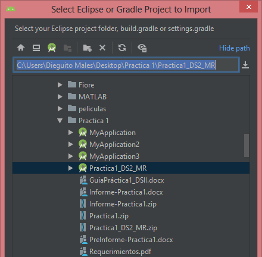

x
x.
- Introduccion a Android Studio
- Estructura del Proyecto
- Descripcion General de Proyectos Modulos
- Archivos de Proyecto
- Vista de Proyectos de Android
- Configuración de la estructura de Proyecto
- Cómo crear un Proyecto
- Cómo elegir un Proyecto
- Cómo configurar un proyecto
- Cómo importar un proyecto existente
- Conceptos básicos del flujo de trabajo para desarrolladores
Es el entorno de desarrollo integrado oficial para el desarrollo de apps para Android, está basado en IntelliJ IDEA po lo que posee sus características y otras lascuales aumentan la productividad cuando se desarrolla apps, como por ejemplo:
- Un sistema de compilación flexible basado en Gradle.
- Un emulador rápido y cargado de funciones.
- Un entorno unificado donde se puede desarrollar para todos los dispositivos Android.
- Aplicación de cambios para insertar cambios de códigos y recursos a la aplicación en ejecución sin reiniciar la aplicación.
- Variedad de marcos de trabajo y herramientas de prueba.
Los proyectos incluyen uno o más módulos con archivos de código fuente y archivos de recursos, como pueden ser:
Android Studio muestra los archivos del proyecto en la vista de proyecto de Android. Esta vista está organizada en módulos para que se pueda acceder rápidamente a los archivos fuente del proyecto. Cada códulo de las aplicaciones contienen estas carpetas:
Un proyecto en Android Studio contiene todo lo que define el trabajo para desarrollar una app, desde código fuente y recursos hasta código de prueba y configuraciones de compilación. Cuando se comienza un proyecto nuevo, Android Studio crea la estructura necesaria para todos los archivos y los hace visibles.
Son un conjunto de archivos fuente y opciones de configuración de compilación que permiten dividir el proyecto en unidades de funcionalidad. El proyecto puede tener uno o más módulos y cada módulo se puede compilar, probar y depurar de forma independiente. Existen varios tipos de módulos, como los que se muestran a continuación:
- Módulo de app para Android
Proporciona un contenedor para el código fuente de la app, los archivos de recursos y las configuraciones de niveles de aplicación, como el archivo de compilación de nivel de módulo y el archivo de manifiesto de Android. - Módulo de funciones dinámicas
Representa una función modularizada de la app que puede aprovechar Dynamic Delivery de Google Play. Por ejemplo, con los módulos de funciones dinámicas, se puede proporcionar a los usuarios determinadas funciones en la app. - Módulo de biblioteca
Proporciona un contenedor para el código reutilizable, que se puede usar como dependencia en otros módulos de apñicación o importar a otros proyectos. A nivel estructural, un módulo de biblioteca es lo mismo que un módulo de app, pero cuando se compila, crea un archivo de código en lugar de un APK, por lo que no se puede instalar en un dispositivo. - Módulo de Google Cloud
Proporciona un contenedor para el código de backend de Google Cloud. Este módulo tiene el código y las dependencias requeridas para un backend de Java App Engine, Cloud Endpoints y Cloud Messaging para conectarse a la aplicación.
De forma predeterminada, Android Studio muestra los archivos de tu proyecto en la vista Android. Esta vista no refleja la jerarquía real de los archivos en el disco, pero se organiza en módulos y tipos de archivos para simplificar la navegación entre los principales archivos fuente de tu proyecto, con lo cual se ocultan determinados archivos o directorios que no se usan con frecuencia.

Dentro de cada módulo de app para Android, los archivos se muestran en los siguientes grupos:
Manifest
Contiene el archivo AndroidManifest.xml.
Java
Contiene los archivos Java de código fuente separados por nombres de paquetes, incluido el código de prueba JUnit.
res
Contiene todos los recursos sin código, como diseños XML, strings de IU y también imágenes de mapa de bits, divididos en subdirectorios pertinentes.
Para ver la estructura de archivos real del proyecto, incluidos todos los archivos ocultos de la vista de Android, selecciona Proyecto en el menú desplegable de la parte superior de la ventana Proyecto. Cuando seleccionas la vista Proyecto, puedes ver más archivos y directorios. Los más importantes son los siguientes: module-name/
|
 |
|
Para cambiar diversas opciones de configuración en tu proyecto de Android Studio, abre el diálogo Estructura del proyecto haciendo clic en Archivo > Estructura del proyecto. Contiene las siguientes secciones:
Ubicación del SDK: Configura la ubicación del JDK, SDK de Android y NDK de Android de tu proyecto.
Proyecto: Fija la versión para Gradle y el complemento de Android para Gradle, y el nombre de la ubicación del repositorio.
Módulos: Te permite editar opciones de configuración de compilación específicas del módulo, lo que incluye el SDK mínimo y de destino, la firma de la app y las dependencias de biblioteca.
La sección de configuración Módulos te permite cambiar las opciones para cada uno de los módulos de tu proyecto.
Propiedades: Especifica las versiones del SDK y de las herramientas de compilación del módulo.
Firma: Especifica el certificado que debe usarse para firmar tu APK.
Tipos: Te permite crear varios tipos; cada tipo especifica un conjunto de ajustes de configuración, como la versión de SDK mínima y de destino del módulo, y el código y nombre de la versión.
Dependencias: Ubica en una lista la biblioteca, el archivo y las dependencias para este módulo. Puedes agregar, modificar y borrar dependencias desde este subpanel.
Android Studio nos permite la creación de aplicaciones en Sistema Operativo Android para varios factores de forma como son los teléfonos, tablets, televisores y dispositivos Wear.
Si no tenemos un proyecto abierto, Android Studio nos muestra una pantalla donde nos da la bienvenida y se procede a dar clic en Start a new Android Studio Project para crear un nuevo proyecto
Si se tiene un proyecto abierto, para comenzar a crear un nuevo proyecto selecciona File > New > New Project en la parte del menú principal
Una vez ingresado a New Project se nos desprende una pantalla donde nos permitirá elegir el tipo de proyecto que se desea crear y se completa con código y recursos para poder comenzar nuestro proyecto.
El asistente Create New Project permite elegir el tipo de proyecto que se desea crear y se completa con código y recursos para comenzar
En la siguiente imagen se puede mostrar un proyecto de actividad básica en Android para un teléfono o una tablet
Después de seleccionar el tipo de proyecto que se desea crear, Android Studio incluye el código de muestra y recursos dicho anteriormente y presentados a continuación
Para configurar los ajustes de nuestro proyecto, tal y como se muestra en la imagen, donde encontramos el nombre de nuestra aplicación o Name, Package Name que es el nombre del paquete o ID de aplicación, Save Location donde se guardara nuestro proyecto en la ruta local, el lenguage o lenguaje a programar donde se escogerá Java y un nivel de API o Minimum API level donde es recomendable trabajar desde un nivel inferior ya que en la actualidad existen personas que aún tienen su Smartphone antiguo y al trabajar con una API inferior permitirá tener acceso desde ese modelo de API en adelante.
Si el tipo de proyecto que se seleccionó admite experiencias instantáneas a través de Google Play Instant y se desea habilitarlo para la app, se marca la casilla junto a This project will support instant apps.
Finalmente si en el proyecto se necesita usar las bibliotecas de AndroidX de manera predeterminada, que son reemplazos mejorados de las bibliotecas de compatibilidad de Android, se marca la casilla junto a Use AndroidX artifacts.
Android Studio una vez creado nuestro proyecto podemos observar el código y los recursos básicos para comenzar con la programación de nuestra app.
Para importar un proyecto existente en Android Studio, sigue estos pasos:
- Haz clic en File > New > Import Project.
- En la ventana que aparece, ve hasta el directorio raíz del proyecto que deseas importar.
- Haz clic en OK.
Finalmente Android Studio abre el proyecto en una nueva ventana de IDE e indexa el contenido del proyecto.

Si se importa un proyecto desde el control de versión, se usa el menú File > New > Project from Version Control.
El flujo de trabajo de desarrollo de una app para Android es conceptualmente el mismo que el de otras plataformas de apps. Sin embargo, compilar de manera eficiente una app para Android bien diseñada requiere algunas herramientas especializadas. En la siguiente lista, se proporciona una descripción general del proceso de compilación de una app para Android y se incluyen vínculos a algunas herramientas de Android Studio que deberías usar en cada fase del desarrollo.
- Configura tu espacio de trabajo
Fase principal donde se basa en la instalación de nuestro software que es Android Studio y posteriormente crear un proyecto. - Escribe tu app
Android Studio ofrece una variedad de herramientas que ayudan a agilitar el trabajo, escribir un código de calidad y diseñar una interfaz de usuario con los recursos necesarios para todo tipo de dispositivos android - Compila y ejecuta tu app
En esta fase de compilar el proyecto, se compilará en un paquete APK depurable que se puede instalar y ejecutar en el emulador o en un dispositivo que ejecute Android - Depura, genera perfiles y realiza pruebas
En esta fase iterativa se continúa escribiendo la aplicación, con mayor énfasis en la solución de errores y optimización del rendimiento, donde las pruebas ayudaran con eso - Publica tu app
Una vez finalizado, se controla la versión y la firma con clave para la publicación de la aplicación realizada